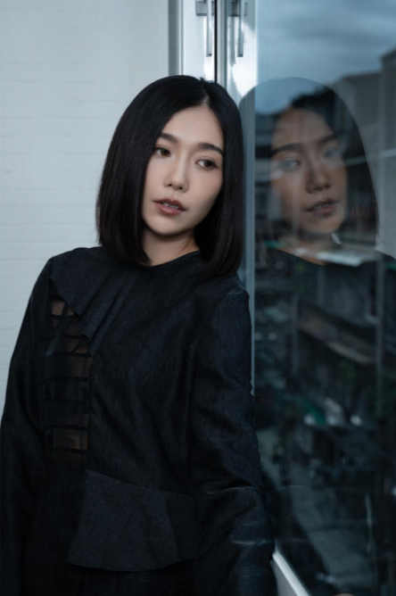
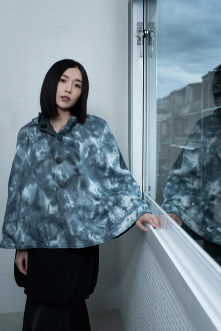
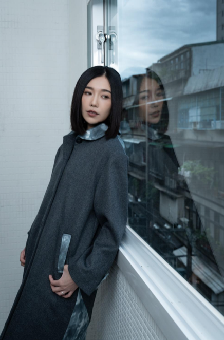

品 牌 名 稱 來 自 於 創 始 人 的 英 文 姓 名 取 首 字 母...
服 裝 是 人 親 密 的 夥 伴, 每 日 形 影 不 離!
WYC創立於2026是一個台灣獨立設計師品牌, 我們旨在打造出時尚的日常服裝和奢華品質標籤。 對於我們來說衣服不只是衣服, 它更是我們親密的伙伴, 每日與我們形影 不離! 當我們創作衣服與之交流時, 賦予它顏色、 有趣的設計、 獨特的元素、 印花和玩味的點子, 將人和衣物的故事融入於我們日常生活之中。
『標準形狀』和平凡的設計不存在於品牌之中, 我們試著打破規則, 用作造力代替經典。 品牌的創立是為了幫助人們表達自己的獨特性、個性、魅力和時尚的形象。
作為一個獨立設計師品牌, 我們堅信品質和服務非常重要。 我們專注於布料的品質和剪裁, 提供修改和訂製的服務, 並提供良好的購物體驗。


我們探索於自然、人文、 回憶、情感、藝術、 時事、歷史、電影、生活、文學......
靈感隨處都是, 時刻隱藏在我們身邊,有時候只需要用心的體會, 它就在那等著我們發現......
對於WYC, 我們在意環境與永續性,我們希望盡可能地使用天然布料、庫存布和減少汙染及浪費。品牌致力於與人的連結和帶給社會正面的影響。
在WYC, 人們將從不同的角度看衣服和這個世界,我們是聰明的、自信的、嚴肅的、堅強的、大膽的和固執的; 我們同時也可以是有趣的、詼諧的、天然呆的、迷人的、異想天開的和略為笨拙的。

Copyright© 2026 WYC Studio. All Rights Reserved.
Site by FashionisTap® Technology